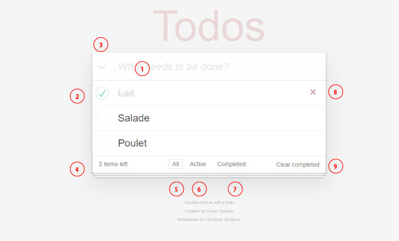

- Saisir un titre pour votre nouvelle tâche
- Cocher la checkbox si votre tâche est terminée
- Cliquer sur le chevron pour passer toutes vos tâches au status " complétée " ou " actif "
- Compteur des tâches actives
- Afficher toutes vos tâches : complètes et actives
- Afficher uniquement vos tâches actives
- Afficher uniquement vos tâches complétées
- Supprimer un tâche
- Supprimer toutes les tâches complétées